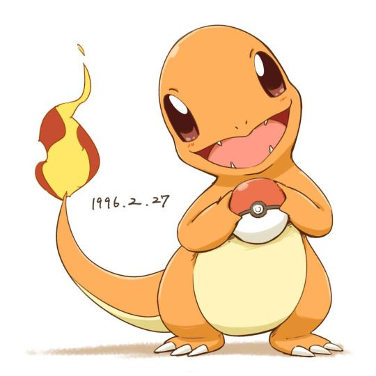

¿YA SABES QUE POKEMON ES EL IDEAL PARA TI?
Te puedes basar en su comportamiento, habilidades e incluso poderes para saber cuál es tu pokemon ideal. Te presentaremos una pequeña lista de los principales pokemones iniciales para comenzar tu aventura asía este maravilloso mundo el cual este es el momento indicado para comenzar como maestro pokemon.

Squirtlex
El caparazón de no le sirve de protección únicamente. Su forma redondeada y las hendiduras que tiene le ayudan a deslizarse en el agua y le permiten nadar a gran velocidad. Es de tipo agua y se volvió famoso por uno de los memes más resonados por la comunidad por la frase “BAMO A CALMARNOS”
charmander
La llama que tiene en la punta de la cola arde según sus sentimientos. Llamea levemente cuando está alegre y arde vigorosamente cuando está enfadado, al medio que evoluciona se puede volver rebelde y su comportamiento puede llegar a ser considerado como brabucón es un pokemon fiel a su amigo y compañero de viajes.


Bulbasaur
A Bulbasaur es fácil verle echándose una siesta al sol. La semilla que tiene en el lomo va creciendo cada vez más a medida que absorbe los rayos del sol, es un pokemon tipo hoja por lo cual es muy eficaz para comenzar tu aventura.
Pikachu
Acumulan electricidad de forma natural. Los bosques donde habitan en grupos están en peligro constante de ser alcanzados por rayos, sin duda el más conocido por todos es tipo eléctrico.